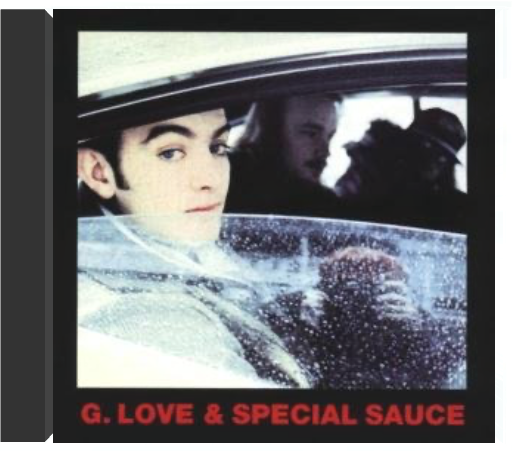

Groundbreaking 2014 album. 8 songs written & recorded in 8 different cities in collaboration with local artists. The whole process documented in the companion HBO TV series! hors-saisonfrancis cabrel Francis Cabrel fait partie des artistes rythmés par un métronome. Tous les cinq ans, un nouvel album : Sarbacane en 1989, Samedi soir sur la terre en 1994, Hors-saison en 1999. Sans doute a-t-il besoin, pour se ressourcer, d'aller se retirer en famille dans le sud-ouest de la France. Quoi qu'il en soit, le résultat est toujours à la hauteur des espérances et les ventes défient la logique. Chacun des trois derniers albums a dépassé le million d'exemplaires ! Si Cabrel signe toujours paroles et musique, il fait ici une exception avec l'adaptation d'un titre d'Otis Redding ("Depuis toujours"). Pour le reste - des chansons originales - il alterne entre violence raisonnée sur notre société et sentiments pudiques sur les relations humaines. "Le monde est sourd", "Presque rien", "Le Reste du temps" viennent s'ajouter à la liste de ses succès. Quant à la chanson-titre "Hors-saison", au thème pourtant très proche de celui de "La Madrague" de Bardot ("sur la plage abandonnée..."), c'est sans aucun doute la plus belle de l'album. Ce n'est pas sans raison que, une fois de plus, 1 million de fans ont plébiscité l'album et lui ont donné la forme d'un diamant. —J.-P. P. et Thierry Cadet |  Frank Cunimondo has an extensive discography, having recorded with nearly every artist from Pittsburgh. In addition, he has shared the stage with a number of jazz stars including: Sonny Stitt, Lou Donaldson, Jimmy Witherspoon, Urbie Green, Lee Konitz, Louie Bellson, Joshua Redman, Phil Woods and Frank Rosolino. The Frank Cunimondo Trio is also a fixture of the Pittsburgh Jazz scene.Frank's most popular recording 'Feelin' Good' (from the album The Frank Cunimondo Trio Introducing Lynn Marino [MOVLP1821]) was used in a commercial by a popular beer brand and became an international hit.In the 80s Frank owned a jazz club in Pittsburgh called 'Cunimondo's Keyboard Jazz Supper Club.' In 1989, he was voted 'Best Jazz Pianist' in Pittsburgh. His style is most often compared to pianist Bill Evans.The Frank Cunimondo Trio originally released Sagittarius on Mondo Records in 1975. It includes a cover of Herbie Hancock's 'Chameleon'. On the album Frank Cunimondo plays acoustic and electric pianos, string ensemble, synthesizer, conga and cabasa while Ray Russell plays bass and Lenny Rogers drums.  UK only vinyl pressing! Funkadelic's self-titled 1969 debut may not be on the same plateau as the group's later, all-encompassing masterpieces (Maggot Brain, Cosmic Slop, etc.), but does serve as the strong foundation upon which their early '70s masterworks were built. Along with Jimi Hendrix's band, Funkadelic is one of the first units to inject funk with hard rock. Whereas funk pioneer James Brown concentrates on creating air-tight, precise grooves, Funkadelic keeps things loose, raw, and groovy. Drug experimentation also plays a prominent role in the band's early work, perhaps never as evidently as on Funkadelic. Westbound. 2006.  philadelphonicg. love, special sauce G. Love est un mec à la coule, et sa sauce, goûteuse mais épicée, n'a aucun mal à prendre. La recette, simple comme bonjour, est celle d'un trio rodé par la scène qui associe batterie brinquebalante, walking bass jazzy et guitare laid-back. Quant aux influences, elles sont à chercher du côté du blues de John Lee Hooker et Muddy Waters comme du rap des Roots et KRS One. G. Love a inauguré une formule à laquelle il reste fidèle avec le quatrième Philadelphonic, celle d'un hip-hop bluesy (ou l'inverse ?) qu'il définit comme du ragmop ! Réalisé à la maison, chez ses parents précisément (G. Love est originaire de Philadelphie... comme Will Smith !), et à Los Angeles où le trio s'adjoint les services du producteur de Cypress Hill, Philadelphonic est on ne peut plus relax mais n'en oublie pas pour autant les chansons montées sur ressorts ("Rodeo Clowns"). Que demander de plus ? —Hervé Comte |

Julien
Collection Total:
2 025 Items
2 025 Items
Last Updated:
Dec 25, 2023
Dec 25, 2023


 Made with Delicious Library
Made with Delicious Library